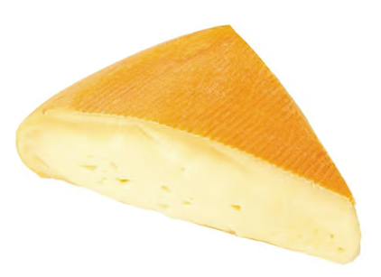

France#
18 Month Aged Comte (Murray’s Cheese)#

Style: Comte
Milk: Cow
Purchase location: Murray’s Cheese
Purchase date: 01/14/22
Julie’s comments: Tan, aged cheese with a thin rind, quite firm. Not a ton of flavor, a bit dry (may have not wrapped it properly?). Needs a jam or something to jazz it up. Overall just ok. Smells like hay. 2.11/5
Andrew’s comments: Very earthy, actually kind of smells/tastes a bit like a barn, but in a pleasant way (if slightly offputting). Nutty & a bit of caramel. Firm texture & somewhat crumbly. 3.4/5
Thanks to Tim & Abigail Necarsulmer for this cheese!
Aged Mimolette (Isigny Ste Mere)#

Style: Other
Milk: Cow
Purchase location: Whole Foods
Purchase date: 09/15/21
Julie’s comments: Burnt sienna, orangey hard cheese, tan irregular rind. Nutty, sharp, similar to parmesan but sweeter and creamier/less crumbly. Great alone, maybe with a sweet spread. 4.0/5
Andrew’s comments: Very nice flavor, nutty & smooth & sweet. Whole foods placard said this was the Willy Wanka of Cheese, but luckily the sweetness is subtle. Tasty solo, doesn’t need chips. 4.1/5
Apple Cider Showmmmz (Wegmans)#
{kind=link}
Style: Other
Milk: Cow
Purchase location: Wegmans
Purchase date: 09/04/22
Julie’s comments: Soft but sturdy ivory cheese with a tan-brown crumbly, slimyish rind. Subtle grassy, mushroomy flavor, salty at the end, a bit of funky tang, especially at rind. Decent cheese, incredible name, okay flavor. 2.38/5
Andrew’s comments: Interesting flavor/texture profression, from salty, chewy, gritty rind at first, hint of a “bright” flavor I can’t place. Then moves into grassy, funky, brie-like (but firmer) center. Aftertaste is less pleasant. 3.4/5
Comte (Wegmans)#
{kind=link}
Style: Comte
Milk: Cow
Purchase location: Wegmans
Purchase date: 12/25/21
Julie’s comments: Yellow, pale cheese with a brown rind. Deep, nutty, rennety, “meaty” cow’s milk (maybe) flavor. Hard/semi-hard cheese, good for snacking, on a classy grilled cheese. Excellent with red wine. 3.65/5
Andrew’s comments: Nice semi-hard, semi-crumbly, chewy mouthfeel. Nutty, medium umami. Great snacking cheese. 3.9/5
Thanks to Barb & Rob Necarsulmer for this cheese!
Comte (Jean Charles Arnaud)#

Style: Comte
Milk: Cow
Purchase location: Whole Foods
Purchase date: 05/15/22
Julie’s comments: Firm white/tan cheese. Mild nutty/grassy flavor with a crumbly/gritty/gummy texture. Tasty, but nothing remarkable - good neutral cheese for a cheese plate with a spicy jam or something. 2.82/5
Andrew’s comments: Nutty, milky, grassy flavor. Pretty mild, tasty but not the most exciting. Semi firm texture, a bit crumbly. 2.6/5
Gabietou (Herve Mons)#

Style: Other
Milk: Cow + Sheep
Purchase location: Whole Foods
Purchase date: 07/09/22
Julie’s comments: Semi firm/kinda soft tan cheese with a brown crusty rind. Creamy but firm texture. Salty & sheep/funky up front but pretty mellow. Rind is dirt-like and not my fave, but isn’t bad. Solid mildly funky cheese. 3.19/5
Andrew’s comments: Soft center with gritty-but-in-a-pleasing-way rind, nice texture. Salty, semi-funky rind but mildish center. A bit sweet even. Hard to rate, interesting but also a bit boring simultaneously. 2.8/5
Grand Camembert (Delice de France)#

Style: Brie-like
Milk: Cow
Purchase location: Fresh Market
Purchase date: 07/02/22
Julie’s comments: Soft off-white cheese with white & tan chalky rind. Brie-like - buttery, rich, creamy interior with mild, salty taste and slight funk that tingles the very back of mouth. Like creamy salted butter that went bad yesterday, but not necessarily in a bad way. 3.21/5
Andrew’s comments: Extra soft gooey center, pleasingly oily & melts in your mouth. Then outer rind gives just enough texture. Nice creamy brie-like flavor, fairly mild especially upfront. Some salty funk comes in later. 3.8/5
Mild Triple Crème Brie (Wegmans)#

Style: Brie-like
Milk: Cow
Purchase location: Wegmans
Purchase date: 12/25/21
Julie’s comments: Golly gee so creamy! Buttery with a sour/funky brie taste, salty. Very spreadable - good with flat bread or a stronger cracker flavor. Considering I don’t love Brie usually, this is pretty good 3.49/5
Andrew’s comments: Super creamy and soft, much more than average Brie. Nice chewy rind as contrast. More funky than average brie, subtle Blue notes. 4.0/5
Thanks to Barb & Rob Necarsulmer for this cheese!
Pyrenees Brebis (Murray’s Cheese)#

Style: Other
Milk: Sheep
Purchase location: Murray’s Cheese
Purchase date: 01/14/22
Julie’s comments: Firm, pale cheese with a thick gradient exterior/rind (I like the rind). Nutty, earthy & buttery, lovely rich flavor. Creamy in mouth when heated but not at room temperature. A unique flavor to me - umami, a bit of salt. Would be nice with white wine, maybe Chardonnay 4.73/5
Andrew’s comments: Quite subtle taste but very nice when you pay attention. Nutty earthy sheeps milk taste. Very unique texture, with gradient from medium to hard, and almost sandy rind (but in pleasant way). 4.3/5
Thanks to Tim & Abigail Necarsulmer for this cheese!
Tomme de Savoie (Herve Mons)#

Style: Tomme
Milk: Cow
Purchase location: Whole Foods
Purchase date: 04/03/22
Julie’s comments: Yellow/tan semi firm cheese with a brown bark-like rind. Funky, mushroomy, staticky flavor that hits the back of my throat & up the sinuses. Gummy, fatty/sticky texture. Flaky rind. This is so bizarre… not bad but not my favorite 1.4/5
Andrew’s comments: Very unique flavor (but not necessarily positive). Earthy, mushroomy, strange. Some hay. Semi-crunchy/flaky texture on rind, gummy interior. It dried out, earlier the inside was gooey & slimy, both options rather weird. 1.5/5